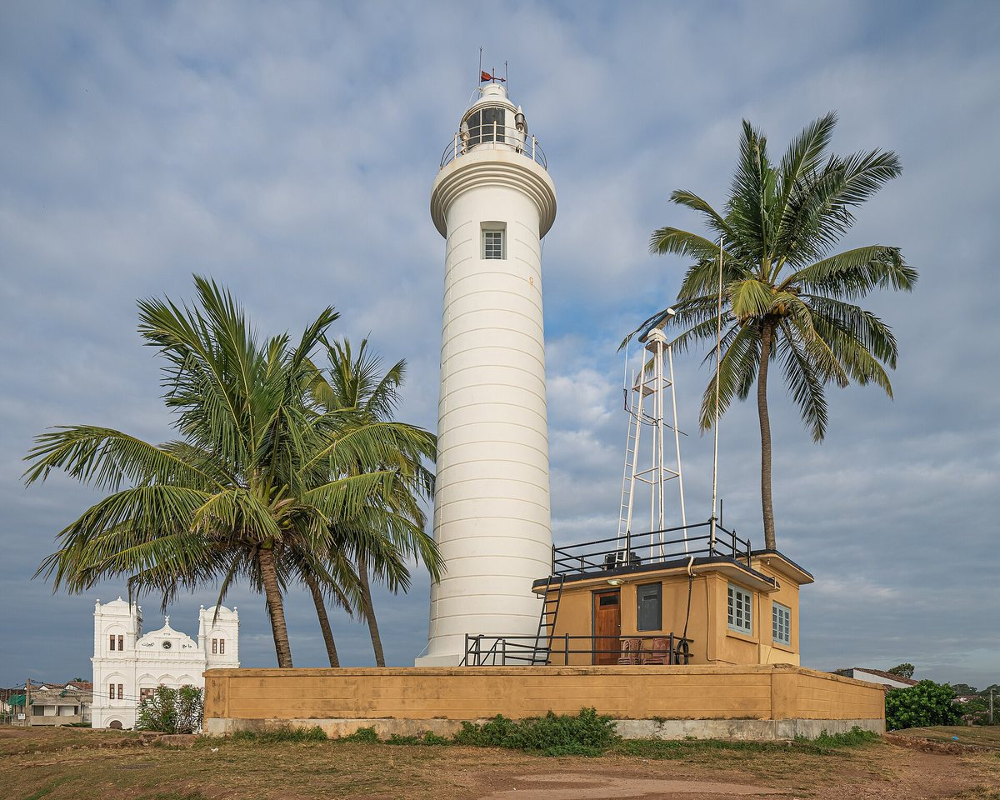
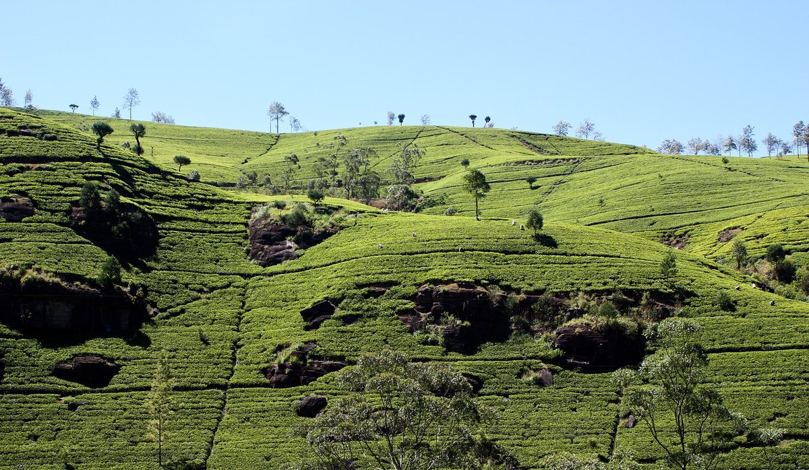

We are direct Sri Lankan journey coordinators and dedicated chauffeur-guides, passionate about revealing the genuine soul, natural drama, and warm hospitality of our island.
The Art of Unhurried Exploration
Sri Lanka is an island of remarkable geographic concentration. Within a single day, one can journey from the sun-drenched Indian Ocean to misty cloud forests rising 2,000 metres high.
Yet too many travellers are rushed through marathon itineraries, spending more time looking at highways than experiencing the land. At SL Mango Exotic Tours, our name is inspired by the sweet, generous abundance of our tropical orchards and the warmth of Sri Lankan village welcomes.
We craft each itinerary with deliberate breathing space: room to stop at roadside stalls for chilled king coconuts, time to sit quietly before the 1,000-year-old stone Buddhas of Gal Vihara, and unhurried mornings to watch mist dissolve over emerald tea terraces in Ella.

Authentic Human Pacing
Carefully sequenced routes designed to prevent travel fatigue and encourage deep cultural connection.The Insignia of SL Mango Exotic Tours
Our official medallion is a handcrafted visual homage to the timeless landscapes, wildlife majesty, and living spirituality of Ceylon.
At its center lies the topography of Sri Lanka, uniting our country's most revered landmarks: the ancient sky citadel of Sigiriya, the Sacred Temple of the Tooth Relic in Kandy, and the mountain summits of the central highlands. Across its valleys curves the Demodara Nine Arch Bridge carrying the iconic blue highland train through misty tea plantations, cascading waterfalls, wild Asian elephant herds, and turquoise coastal surf.
Embraced by the golden lion of the national flag and twin tropical Ceylon mangoes—symbols of island hospitality and natural abundance—the emblem honors the worldwide travelers from Europe, the Americas, Asia, and Australasia who place their trust in our care.
Four Principles of Our Hospitality
Grounded in honesty, personal responsibility, and deep respect for the communities we visit.
Direct Operator Transparency
When you consult with us, you speak with the exact team managing your logistics, driver assignment, and daily arrangements. We provide itemised, honest quotes with zero surprise surcharges.
Professional Chauffeur-Guides
Our drivers are certified tourism professionals who hold valid Sri Lanka Tourism Development Authority (SLTDA) credentials, seasoned defensive driving records, and fluent English communication skills.
Dedicated Executive Fleet
We exclusively deploy modern Toyota executive sedans, high-roof KDH passenger vans, and Coaster mini-coaches equipped with powerful air conditioning, reclining seats, and clean luggage bays.
Responsible Cultural Stewardship
We champion ethical animal welfare at all sanctuaries, encourage community-led village dining, respect sacred temple codes, and support independent local craftsmen and tea families directly.

Respecting the Land & Communities We Share
Sri Lanka's delicate ecosystems — from the wild scrubland of Yala to the fragile high-altitude cloud forests of Horton Plains — require responsible travellers and guardians.
We firmly avoid any activities that exploit wildlife. In national parks, our drivers follow designated tracks, maintain safe viewing distances from elephant herds and leopards, and ensure all park rules are strictly honoured.
When travelling with us, your tourism revenue reaches real Sri Lankan families: the rural catamaran boatman in Hiriwadunna, the cinnamon peeler on the Madu Ganga, and the small family-owned spice garden in Matale.